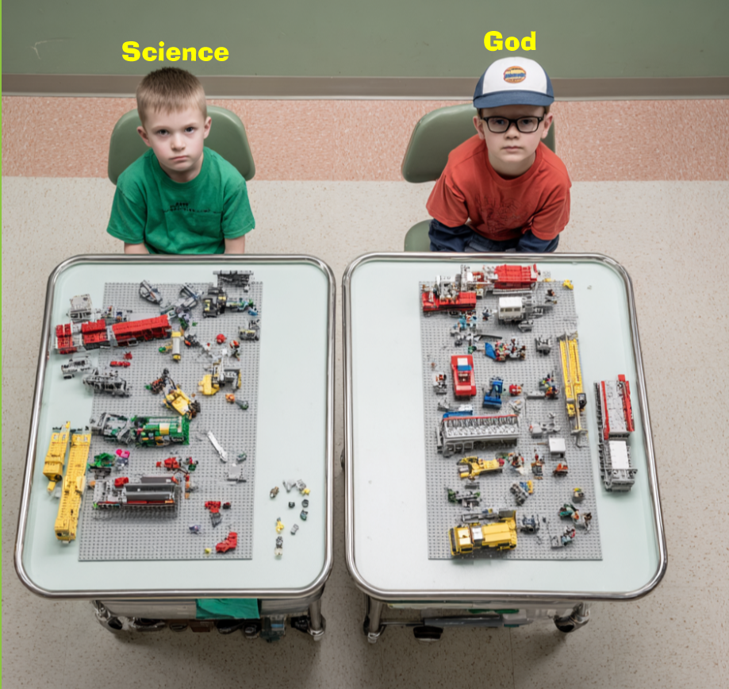
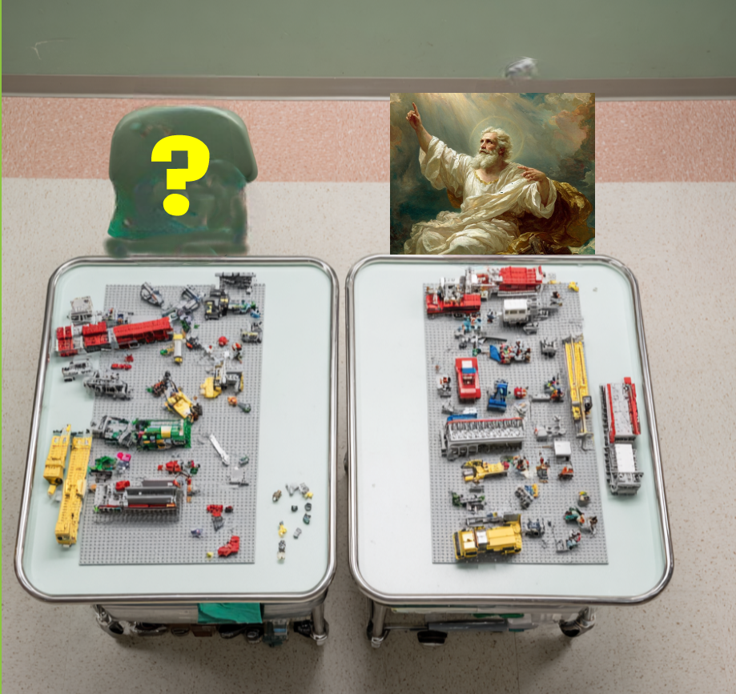

I've always had a chip on my shoulder about the claim that Science and God are in opposition to each other. I personally believe Science proves God on so many levels, though I won't get fully into that here. I don't share my faith much anymore in person, which makes me sad — I've lost a lot of things since my brain tumor, but that one hurts the most. I'm certainly no longer “winsome,” so I'm not sure anyone would listen to me even if I tried.
As a result, my main avenue for sharing faith now is online — social media, of all places. My Facebook account has the most contacts, so that's usually where I post. Here's roughly how I laid out the God-and-Science discussion there:
Both Science and God agree on the elements that exist in the universe, and on the process those elements must follow when they interact with each other.

But where do these elements come from, and why do they interact the way they do — and why does math explain it so precisely?

That's the whole argument, really. Science is extraordinarily good at describing what exists and how it behaves. It has nothing to say about why those elements exist in the first place, why they follow consistent, mathematically describable laws instead of chaos, or why the universe is comprehensible to minds like ours at all. Those are the questions that, to me, point straight back to a Mind behind the elements — not a competing explanation to science, but the explanation science itself depends on and can't supply.
I'd genuinely welcome pushback on this if you think I'm missing something, or think it's worth posting more broadly.
Comments